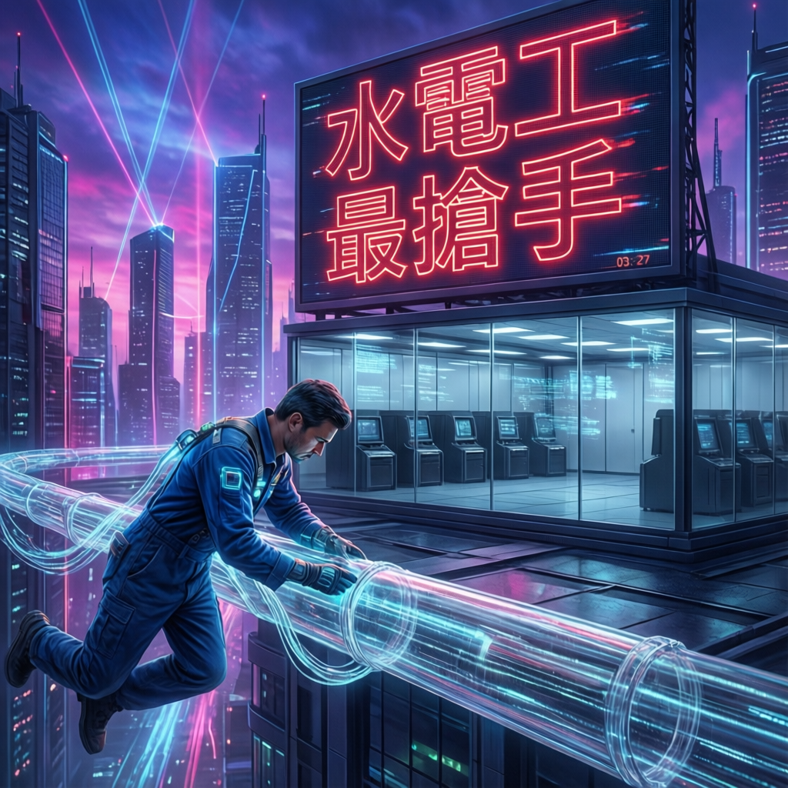

水電工成最搶手職業，人工智能浪潮重塑勞動市場格局，傳統白領優勢地位面前所未有的挑戰

本次報告揭示了一個顛覆性的社經趨勢：人工智能的快速發展正在徹底改寫傳統的「美國夢」敘事。長期以來被視為成功象徵的白領職業，正遭遇AI技術的直接衝擊；反觀過去被低估的藍領工作，卻因具備難以自動化的特性而身價倍增。研究指出，這場職業價值的重組不僅是短期現象，更可能預示著勞動市場結構的長期轉型。
數據顯示，水電工等技術型藍領職業已成為當前最搶手的工作類別之一。這一轉變打破了數十年來「學歷至上」的職業發展邏輯，促使社會重新審視技能培養與經濟價值之間的關聯。
專家分析指出，AI技術對不同職業層級的影響呈現明顯差異。白領工作雖然過去享有較高社會地位與薪酬，但其核心職能——如文書處理、數據分析、基礎決策等——正被大型語言模型與自動化系統逐步取代。相對而言，藍領工作涉及實體操作、現場判斷與人際互動等要素，短期內難以被AI完全複製。
業界觀察顯示，近期勞動市場呈現多項值得關注的指標變化。技術型藍領職缺的增長速度持續超越白領職位，而相關領域的薪資談判籌碼也明顯提升。這一趨勢在基礎建設投資增加、能源轉型加速的背景下更為顯著。
研究同時發現，職業培訓體系與市場需求之間存在明顯落差。傳統教育機構的課程設計尚未充分反映這一結構性轉變，導致部分領域出現人才短缺與技能錯配並存的現象。
AI時代的核心競爭力正在從「知識儲備」轉向「實踐技能」與「情境判斷」。能夠結合技術專精與現場應變能力的複合型人才，將在未來勞動市場中佔據主導地位。這一轉變要求教育體系、企業培訓與個人職涯規劃進行相應調整。
AI 革命正在動搖美國數十年「上大學、進辦公室、成為中產階級」的成功公式。AT&T、摩根大通等大型企業表示，AI 最先衝擊的不是工廠產線，而是過去被認為最安全的白領入門職位。與此同時，資料中心、晶片廠與網路基礎設施的建設熱潮，讓技術工人需求快速攀升。
諷刺的是，AI 創造的第一批贏家，可能不是科技工程師，而是電工、水電技師、光纖技術員與建築工人。輝達執行長黃仁勳稱：「這可能是人類史上最大的基礎設施建設。」
Stanford Digital Economy Lab 研究指出，以下產業的年輕工作者就業成長速度較其他產業低 16%：
AI 能快速分析數據、生成報告，基礎工作已被大量自動化
AI 輔助編碼工具減少了對入門級工程師的需求
文件審閱、基礎合約分析等正逐步被 AI 取代
數據整理、報告生成、客戶篩選等工作大幅減少
與白領蕭條形成對比，基礎設施建設相關的技術工人需求暴增。黃仁勳點名的未來熱門職業：
未來需求包括：水電工、電工、建築工人、網路技術員、鋼鐵工人、設備安裝工程師。部分職位甚至可能達六位數美元年薪。
AT&T 執行長 John Stankey：「公司目前最缺的不是剛畢業的大學生，而是懂電力、光纖、通訊設備與現場施工的人員。」
AT&T 預計未來五年投入 $2,500 億擴張光纖網路與 AI 資料中心，重點招募對象是第一線技術工種，而非總部白領：
| AT&T 策略 | 具體內容 |
|---|---|
| 年度新增技術人員 | 約 3,000 名 |
| 過去三年招募總數 | 超過 1 萬人 |
| 人均培訓成本 | $5 萬至 $8 萬美元 |
| 留任/簽約獎金 | $5,000 至 $1 萬美元 |
| 最大困境 | 人找不到 |
| 維度 | 傳統白領 | 藍領技術工人 | 趨勢 |
|---|---|---|---|
| 失業率 | 22-27 歲大學畢業生失業率達 5.4%（1990 年以來新高） | 建築與維修類維持低位 | 白領 ↑ 藍領 ↓ |
| AI 取代風險 | 高（資料整理、報告、數據分析） | 低（實體操作、現場判斷） | AI 偏好白領 |
| 未來需求 | 放緩成長 | 2030 年短缺 210 萬人 | 藍領嚴重缺工 |
| 薪酬前景 | 新人職位萎縮 | 部分可達六位數年薪 | 藍領薪資趨升 |
| 技能獲取方式 | 需四年大學學位 | 職業培訓、學徒制 | 藍領更快入門 |
「他曾進入大學，但後來選擇輟學投入技術工作。不到一年，他存夠頭期款買下三房住宅，目前除了房貸沒有其他債務，下午 4 點半多數時間即可下班，還能固定為女兒投資基金。」
— 24 歲 AT&T 技術員 Kyson Cook 的真實故事專家解釋：「AI 能分析數百萬份文件，但短期內還不能在大雨中爬上 8 公尺高電線桿，維修光纖線路。」
這反映了 AI 時代的核心價值轉移：
這場變革的影響遠比科技革命更深遠。如果 AI 重塑的不只是工作，而是整條從校園通往中產階級的道路，那麼：
美國夢並未消失，只是開始換了樣貌。